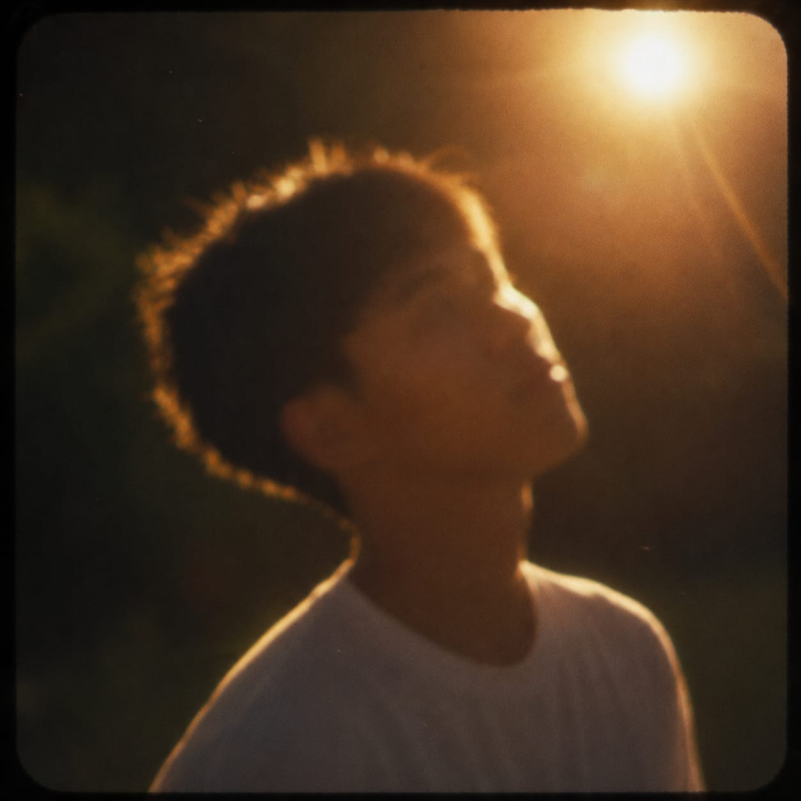

|
 Fatkhur rohmanMahasiswa Sistem Informasi PROFIL SINGKATSaya adalah mahasiswa Sistem Informasi yang tertarik pada teknologi, pengembangan aplikasi, pengelolaan data, dan kreativitas digital. KONTAK
Email:
Instagram: MINAT
|
PORTOFOLIO PRIBADIMengenal diri, mengembangkan kemampuan, dan membangun masa depan. Tentang Saya | Pendidikan | Pengalaman | Cita-Cita 01. Tentang SayaHalo! Saya Fatkhur rohman, mahasiswa Sistem Informasi di STMIK El Rahma Yogyakarta. Saya memiliki ketertarikan dalam bidang teknologi informasi, pengembangan sistem, pengolahan data, dan pembuatan aplikasi. Saya merupakan pribadi yang bertanggung jawab, mudah beradaptasi, dan memiliki semangat belajar yang tinggi. Saya percaya bahwa pengalaman dan kemauan untuk terus berkembang merupakan bekal penting untuk meraih masa depan. 02. Riwayat Pendidikan
03. Pengalaman dan AktivitasPengembangan Sistem InformasiMempelajari proses perancangan sistem informasi dan pembuatan aplikasi untuk membantu menyelesaikan permasalahan dalam kegiatan sehari-hari. Pembelajaran Pemrograman WebMempelajari dasar HTML untuk membuat halaman web yang berisi teks, gambar, tabel, daftar, dan tautan menuju halaman lain. Pengembangan DiriTerus berusaha meningkatkan kemampuan komunikasi, kreativitas, kedisiplinan, dan tanggung jawab. 04. Cita-Cita dan Pandangan HidupCita-CitaMenjadi profesional di bidang teknologi informasi yang mampu mengembangkan aplikasi dan sistem digital yang bermanfaat bagi masyarakat. Prinsip Hidup"Kesuksesan bukan hanya tentang seberapa cepat kita sampai, tetapi seberapa konsisten kita melangkah dan belajar dari setiap proses." 05. PenutupTerima kasih telah mengunjungi portofolio saya. Saya akan terus belajar, mengembangkan kemampuan, dan berusaha memberikan hasil terbaik dalam setiap kesempatan. |